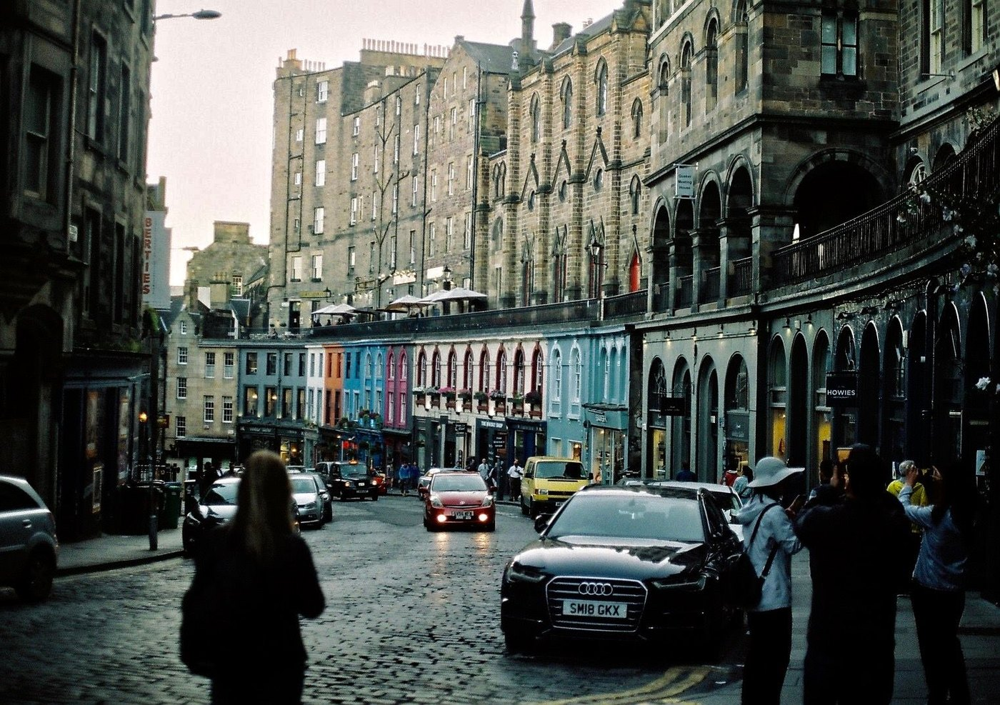

EdinburgasPradžia / Temos / Gyvenimas tarp kultūrų
Gyvenimas tarp kultūrų
Tiems, kurie išvyko gyventi į kitą šalį arba po daugelio metų grįžo į Lietuvą.
Kaip tai gali jaustis
Persikraustymas į užsienį gali būti nuostabi patirtis. Daugelis svajoja dirbti nuotoliu ir gyventi kaip skaitmeniniai klajokliai.
Kartu visiškai natūralu, kad toks pokytis sukelia klausimų viduje. Kiek man svarbi mano gimtoji šalis? Kaip gyventi toli nuo senstančių artimųjų? Dar tenka kasdien reikšti save užsienio kalba.
Kartais net ilgai svajotas persikraustymas gali atnešti vienatvės. Rasti savų žmonių reikia laiko, kaip ir priprasti prie naujų namų.
Psichologinėse konsultacijose galime tyrinėti šiuos jausmus ir vidinius pokyčius, kuriuos neišvengiamai atneša toks didelis išorinis pokytis.
Kas išvykusiems dažnai būna sunkiausia
Tyrimai su žmonėmis, gyvenančiais ir dirbančiais užsienyje, rodo kelis dažnus sunkumus.
- Vienatvė ir savų žmonių paieška
Naujoje vietoje paramos tinklą dažnai tenka kurti iš naujo. Konsultacijose galime pažvelgti, kas dabar trukdo užmegzti ryšį ir ko jums reikia iš aplinkinių.
- Savęs reiškimas kita kalba
Kalbėdami apie jausmus antrąja kalba, daugelis jaučiasi mažiau savimi. Galite rinktis lietuvių arba anglų kalbą ir bet kada pereiti iš vienos į kitą.
- Priklausymas ir tapatybė
Galite svarstyti, kur dabar yra namai ir kas jumyse pasikeitė. Kartu galime tyrinėti, kaip dabar save matote, neskubėdami ieškoti atsakymo.
- Kasdienis stresas naujoje kultūroje
Kitokios darbo taisyklės, kitas gyvenimo ritmas ir smulkūs kasdieniai nesusipratimai kaupiasi. Kartu galime pastebėti, kaip tai jus veikia ir kas padeda.
Daugiau skaitykite (anglų kalba)
Kada geriau tiktų kita pagalba
Aš galiu netikti, jei ieškote krizės intervencijos, oficialios diagnozės, medikamentinio gydymo ar jo tikslinimo arba labai struktūruotų trumpalaikių konsultacijų. Tokiais atvejais galėčiau tik nukreipti jus pas tinkamesnį specialistą.
Praktinė informacija
- Trukmė
- 50 minučių
- Kaina
- 50 € klientams Lietuvoje, 80 € klientams užsienyje
- Kur
- Internetu, lietuvių arba anglų kalba
- Pirmas žingsnis
- Nemokamas 20 minučių pokalbis, skirtas pasitikrinti, ar tinkame vienas kitam, ir pradėti formuoti konsultacijų tikslus